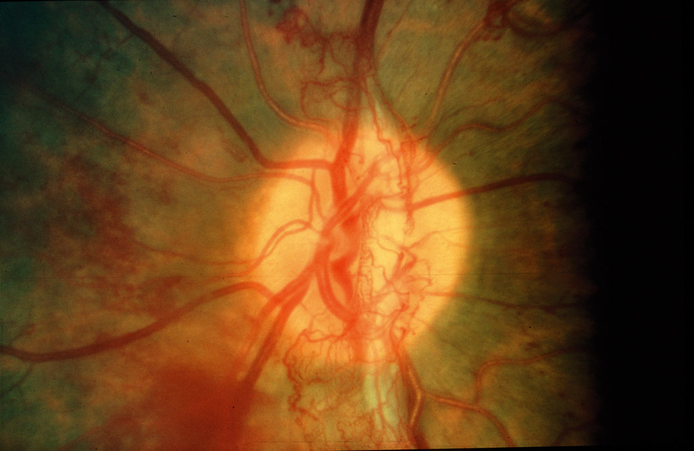
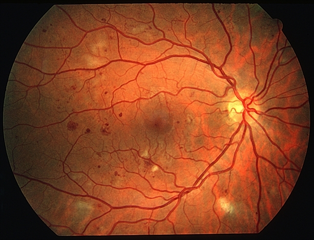
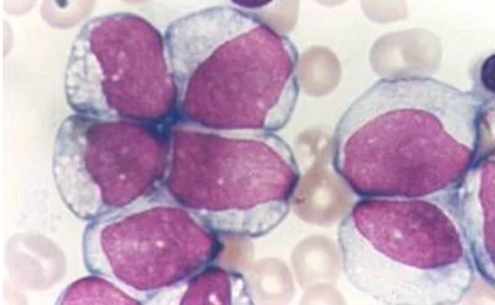
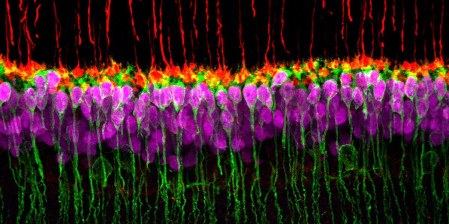
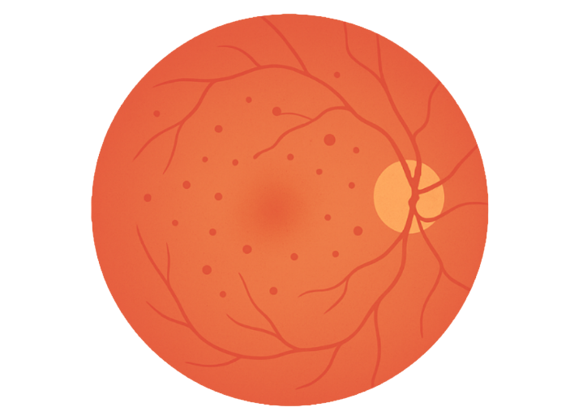
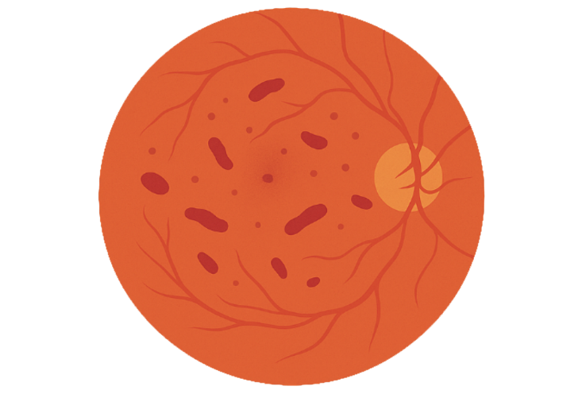
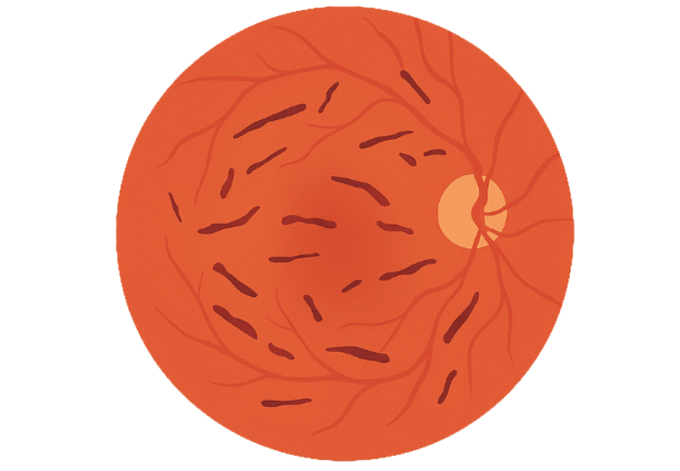
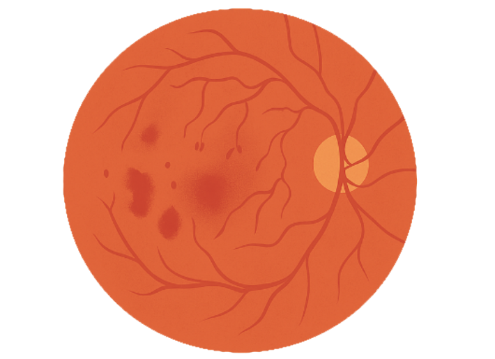

What is Diabetic retinopathy?
Diabetes is a common disease which leads to several complications, such as microvascular conditions (Wong et al, 2016). Diabetic retinopathy is the leading cause of vision loss, particularly in adults and the elderly (Wong et al, 2016). The progression of the disease can be detrimental without treatment, as new abnormal blood vessels form, leading to the possibility of macular edema (Wong et al, 2016).
Content

Causes of Diabetic Retinopathy
Vascular Changes
- Diabetic retinopathy is a microvascular disease caused by chronic hyperglycemia (Wang & Lo, 2018).
- Retinal blood vessels dilate and change blood flow in response to high glucose (Wang & Lo, 2018).
- Early damage occurs due to the loss of pericytes (Wang & Lo, 2018).
- Pericytes support vessel walls and regulate blood flow (Atwell et al., 2015).

Inflammation
- Inflammation is widely observed in diabetic patients and animal models (Wang & Lo, 2018).
- Increased leukocytes stick to capillary walls, causing leukostasis (Wang & Lo, 2018).
- These leukocytes damage the blood–retina barrier (Wang & Lo, 2018).
- This barrier normally prevents blood components from leaking into retinal tissue.

Neuron Death
- Retinal neurons undergo programmed cell death (apoptosis) shortly after diabetes onset (Wang & Lo, 2018).
- Apoptosis-related proteins increase due to prolonged high glucose exposure.
- Damage affects visual function over time.

Stages of Diabetic Retinopathy

Mild non-proliferative DR
- Microaneurysms are present in the retina
(Wong et al., 2016)

Moderate non-proliferative DR
- Microaneurysms
- Retinal dots
- Blot hemorrhages
(Wong et al., 2016)

Severe non-proliferative DR
- Intraretinal hemorrhages (more than 20 in each quadrant)
- Venous bleeding
- Intraretinal microvascular abnormalities
(Wong et al., 2016)

Proliferative DR
- Neovascularization
- Preretinal or vitreous hemorrhage
- High risk of retinal detachment
(Wong et al., 2016)